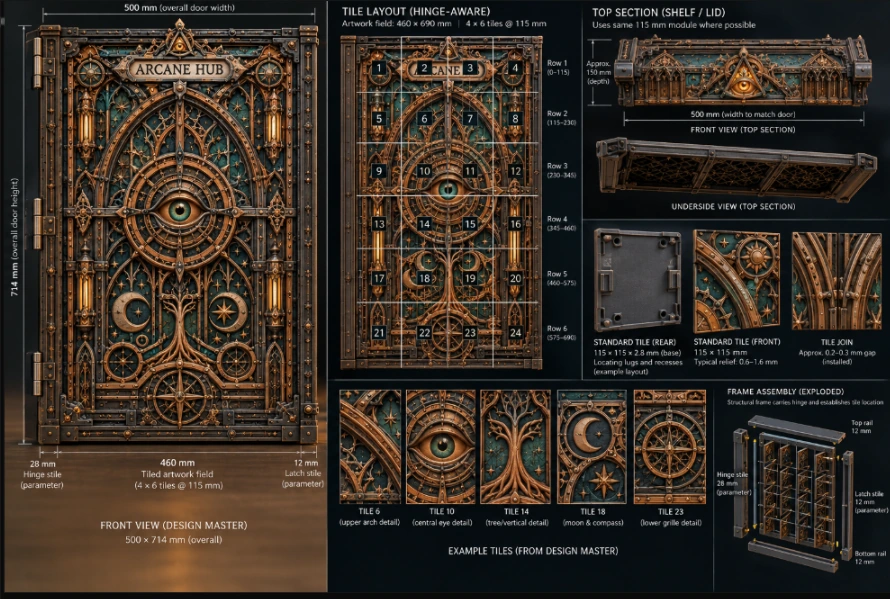

DESIGN BOARD / LAYOUT STUDYArcane Hub Reliquary
I wanted to hide a rather plain bit of computer equipment. The cover now involves a hinged door, a lot of printed tiles and a watchful eye.
Open the record
The idea. Hide the equipment without making the space difficult to get into.
Where it is now. A planned cabinet screen with modular decorative panels and translucent sections; the door layout has to work around the hinge.
Still working on. Print quality, individual tile sizes and keeping the overall design lined up across the door.